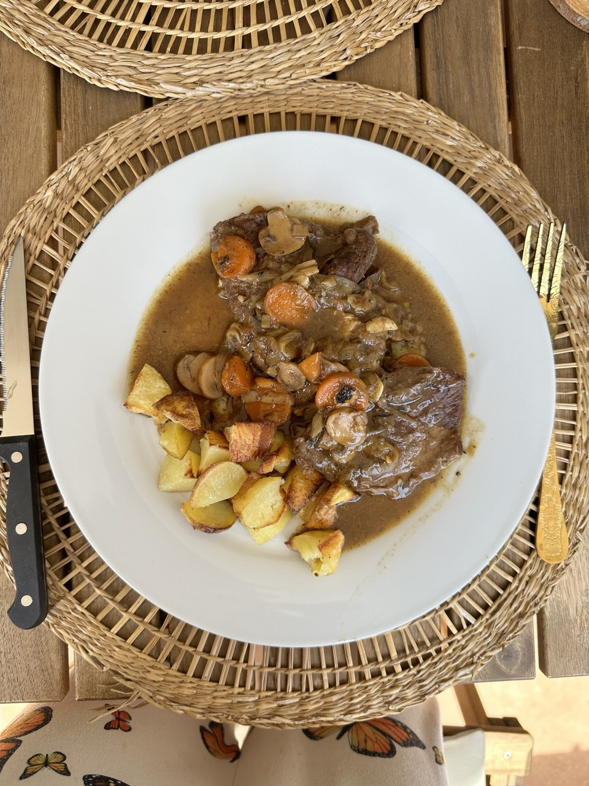

← Menú
Ternera en salsa
Ingredientes (para 2 personas)
500 g de filetes de ternera
1 cebolla
¼ de puerro
4 dientes de ajo
4 champiñones laminados
½ tomate
2 zanahorias
2 hojas de laurel, 1 cubo de caldo de verduras, 2 cucharadas de harina
Preparación
Sofreír en la olla.
Echar un chorro de
aceite de oliva
y dorar los
filetes
(si quedan trozos rojos no pasa nada). Sacarlos y pochar la
cebolla
, el
ajo
, el
puerro
, los
champiñones
, la
zanahoria
y el
tomate
todo cortado a trozos pequeños.
Hervir en la olla.
Echar los
filetes
que habíamos apartado, un chorro de
vino blanco
, la
harina
y el
cubo de caldo de verduras
. Cerrar la olla y dejar 20 min a fuego bajo.
